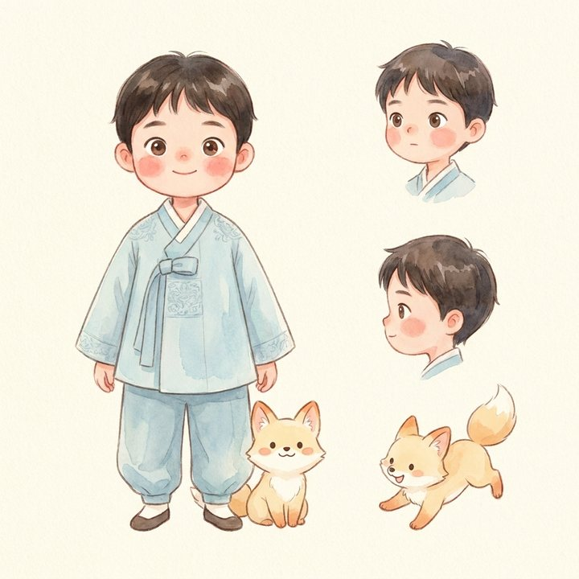
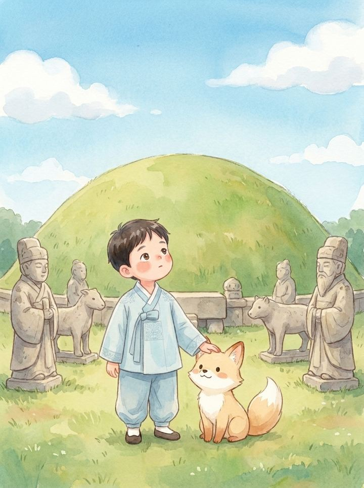

프롤로그·동화·삽화 생성 프롬프트를 수정하고, 변경에 따른 생성 결과를 바로 테스트합니다. {name}·{spots} 변수는 실행 시 치환됩니다. (PoC 하네스 — 실서비스에서는 이 프롬프트가 OpenAI로 전달됩니다.)
승인된 여주 역사 사실 목록입니다. 생성문에 이 목록에 없는 연도·인물이 있거나, 활동 세기가 크게 다른 인물이 함께 등장하면 환각으로 보고 차단합니다. 아래에 문장을 넣어 직접 검사해 보세요.
공고 요구인 단계별 소요 시간 계측입니다. 삽화 생성이 병목이라 페이지 수가 늘수록 시간·비용이 급증합니다. 슬라이더로 페이지 수를 바꿔 보세요.
아동 부적절 표현 사전입니다. 생성 텍스트를 이 목록과 대조해 걸러냅니다. 항목을 추가·삭제하고 아래에서 테스트하세요.
AI 단독 생성물은 저작권이 성립하지 않을 수 있고, 정부지원 산출물은 귀속 규정을 따릅니다. 문체부 「생성형 AI 저작권 안내서」는 인간의 창작적 개입·생성 과정 기록을 등록·분쟁의 근거로 봅니다. 파이프라인 실행마다 프롬프트·모델·시각·검수 결과를 남깁니다.
| 시각 | 주인공 | 텍스트 모델 | 삽화 모델 | 사실검증 | 인간 개입(검수) |
|---|
AI 삽화의 최대 난점은 페이지마다 주인공 얼굴이 바뀌는 것입니다. 기준 캐릭터 시트를 레퍼런스로 고정하고 모든 장면을 그 참조로 생성해 동일 인물을 유지했습니다(아래는 실제 생성 에셋).

